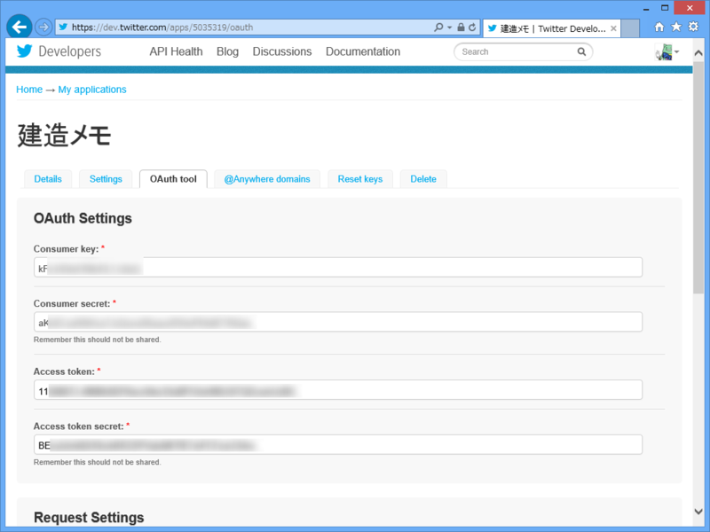
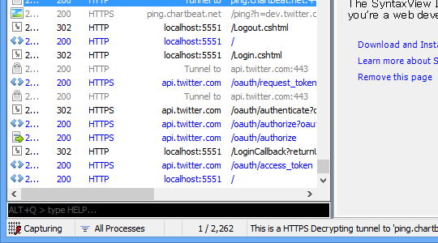
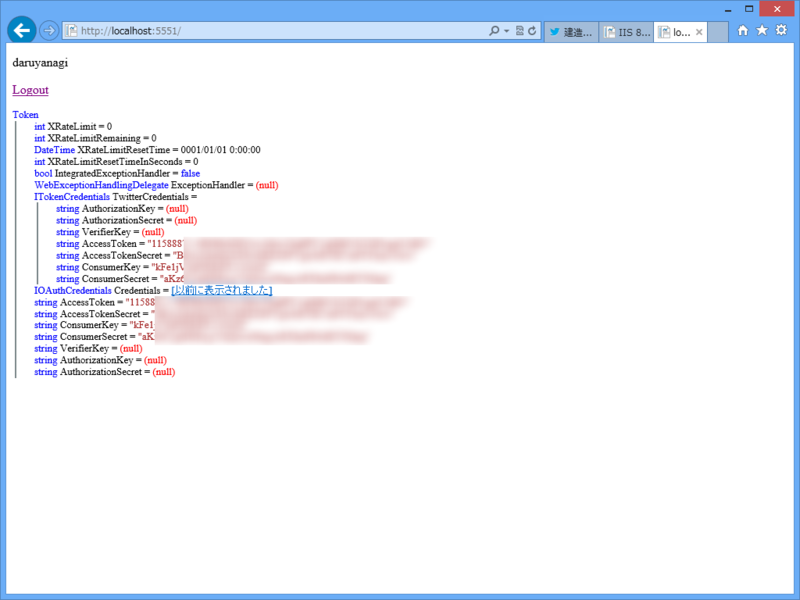

WebMatrix 3: Twitter でログインしてアクセストークン（秘）を取得する
公開日：
WebMatrix 3: Twitter でログインする - だるろぐ でめでたく Twitter でのログインが実現できたのだけど、実はひとつ問題があった。

AccessTokenSecret が取れない。
自分もあんまりよくわかっていないのだけど、Twitter の API を利用するには以下の情報が必要であるみたい。

まず、これ。アプリが Twitter へアクセスするために必要。
- ConsumerKey
- ConsumerSecret
次に、これ。ユーザーに成り代わって Twitter の API を使うために必要。
- AccessKey
- AccessKeySecret
アプリの登録画面で取得できる AccessKey/AccessKeySecret はアプリを登録したユーザーのアクセスキー。このアプリにログインしたユーザーとして API を利用するには、そのユーザーに対して発行される AccessKey/AccessKeySecret が必要だ。
でも、OAuthWebSecurity では ExtraData から AccessKey をもらうことはできても、AccessKeySecret まではくれないみたい。

通信を Fiddler でみてみた。ちゃんと authorize したあとに access_token している（ここで AccessKey がもらえる）から、ついでに AccessKeySecret もとってきてくれてもよさそうなのだけど。なにか理由があるのかもしれないが、これではちょっと困る。
これを解決するには、Twitter プロバイダーを自分で実装すればよいようだ。
// ~/App_Code/TwitterClient.csusing DotNetOpenAuth.AspNet; using DotNetOpenAuth.AspNet.Clients; using DotNetOpenAuth.Messaging; using DotNetOpenAuth.OAuth; using DotNetOpenAuth.OAuth.ChannelElements; using DotNetOpenAuth.OAuth.Messages; using System.Collections.Generic;
// http://stackoverflow.com/questions/12198734/getting-twitter-access-secret-using-dotnetopenauth-in-mvc4
public class TwitterClient : OAuthClient { /// <summary> /// The description of Twitter’s OAuth protocol URIs for use with their "Sign in with Twitter" feature. /// </summary> public static readonly ServiceProviderDescription TwitterServiceDescription = new ServiceProviderDescription { RequestTokenEndpoint = new MessageReceivingEndpoint( "https://api.twitter.com/oauth/request_token", HttpDeliveryMethods.GetRequest | HttpDeliveryMethods.AuthorizationHeaderRequest), UserAuthorizationEndpoint = new MessageReceivingEndpoint( "https://api.twitter.com/oauth/authenticate", HttpDeliveryMethods.GetRequest | HttpDeliveryMethods.AuthorizationHeaderRequest), AccessTokenEndpoint = new MessageReceivingEndpoint( "https://api.twitter.com/oauth/access_token", HttpDeliveryMethods.GetRequest | HttpDeliveryMethods.AuthorizationHeaderRequest), TamperProtectionElements = new ITamperProtectionChannelBindingElement[] { new HmacSha1SigningBindingElement() }, };
public TwitterClient(string consumerKey, string consumerSecret) : base("twitter", TwitterServiceDescription, consumerKey, consumerSecret) { } protected override AuthenticationResult VerifyAuthenticationCore(AuthorizedTokenResponse response) { string accessToken = response.AccessToken; string accessSecret = (response as ITokenSecretContainingMessage).TokenSecret; string userId = response.ExtraData["user_id"]; string userName = response.ExtraData["screen_name"];
var extraData = new Dictionary<string, string>() { {"accesstoken", accessToken}, {"accesssecret", accessSecret} }; return new AuthenticationResult( isSuccessful: true, provider: ProviderName, providerUserId: userId, userName: userName, extraData: extraData); } }
結果はこんな感じ。いつもどおり ObjectInfo.Print() で中身を見てみたよ。

実装としてどうするのが理想的なのかはよくわからないけれど、とりあえずユーザーを管理するテーブルを拡張して、アクセスキーを保管しておくのとかどうでしょうか。
@{
var returnUrl = Request["returnUrl"];
// ログインの検証
var result = OAuthWebSecurity.VerifyAuthentication(
Href("LogonCallBack", new { ReturnUrl = returnUrl })
);
if (result.IsSuccessful)
{
// ログインが成功すると、
// - provider: twitter
// - ProviderUserId: twitter の ID
// - UserName: twitter のスクリーンネーム
// の3つが得られる。自動補完が効かないので変数に入れとく
var provider = result.Provider;
var providerUserId = result.ProviderUserId;
var userName = result.UserName;
var accessToken = result.ExtraData["accesstoken"];
var accessTokenSecret = result.ExtraData["accesssecret"];
<p>@ObjectInfo.Print(result.ExtraData)</p>
// ユーザー名が Users テーブルに存在しない場合、
// あらかじめユーザー名を追加しておく。
// でないと CreateOrUpdateAccount() でコケる
using (var db = Database.Open("kenzou-memo"))
{
const string SELECT = "SELECT * FROM USERS WHERE Name=@0";
const string INSERT = "INSERT INTO Users (Name, AccessToken, AccessTokenSecret) VALUES (@0, @1, @2)";
const string UPDATE = "UPDATE Users SET AccessToken=@1, AccessTokenSecret=@2 WHERE Name=@0";
if (db.QuerySingle(SELECT, userName) == null) // この処理を追加してみました
{
db.Execute(INSERT, userName, accessToken, accessTokenSecret);
}
else
{
db.Execute(UPDATE, userName, accessToken, accessTokenSecret);
}
}
// CreateOrUpdate とか言ってるけど、
// やってることは Users テーブルと内部管理テーブルの紐づけ
OAuthWebSecurity.CreateOrUpdateAccount(
provider,
providerUserId,
userName);
// ログインチケットの発行
OAuthWebSecurity.Login(
provider,
providerUserId,
createPersistentCookie: true);
Response.Redirect(returnUrl);
}
else
{
// ログインに失敗したときの処理
}
}
自分でプロバイダーを実装するのはそこはかとなくめんどくさいけれど、丸コピで動くのでまぁ、よし。プロバイダーをどうやって実装するのかも少し分かったし。練習として、ほかのサービスを実装してみるのもよいかもしれない。最近なんかだと GitHub なんかが需要ありそうだ。